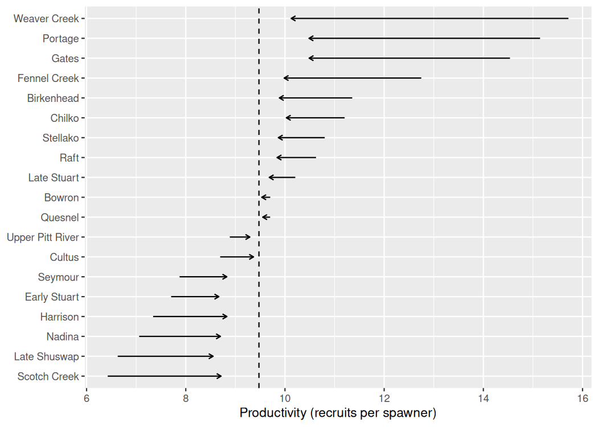

Many Stocks: Random Effects for Groups
Last updated on 2026-11-24 | Edit this page
Estimated time: 45 minutes
Overview
Questions
- How can one model use all 19 stocks at once?
- What is shrinkage?
- Why can a covariate look strong across many stocks and then lose its support?
Objectives
- Build a data list with a group index and fit a model with one random effect per group.
- Describe shrinkage: which groups move most toward the average, and why.
- Add a year effect shared by all groups and interpret the two standard deviations.
Starting Point
This episode scales up step 7 of the Quick Start: random effects for groups instead of years. It is optional: the episodes after it use only the single-stock recipes.
Run This If You Are Starting Here
If you have followed along, you already have these objects. If you
are starting here or have restarted R, run this chunk first. It needs
data/sockeye.csv, data/npgo.csv and
files/cookbook.R in your project (see Setup).
R
library(RTMB)
library(dplyr)
library(ggplot2)
source("files/cookbook.R") # the finished recipe box (your my-recipes.R works too)
sockeye <- read.csv("data/sockeye.csv")
npgo <- read.csv("data/npgo.csv")
This is the first episode to cut. If you cut it, tell learners where it is, and tell the pooled-NPGO story in two minutes at the end of Episode 9: across all 19 stocks, NPGO lowers AIC by 16 without shared year effects but raises it by 0.6 with them. Every fit here takes under half a second. The optional residual spoiler takes about 3 seconds and the optional profile interval about 5.
One Model, 19 Stocks
So far every model has used one stock, a group of salmon that spawn in the same place at the same time of year. The data have 19 stocks. Fitting each stock separately ignores what the stocks share: a similar biology and the same ocean. One model can let each stock have its own productivity, recruits per spawner when spawners are few, while learning how much stocks differ.
In the Quick Start, the random effect was a set of related values, one productivity per year, tied together by a random walk. Here it is one productivity per stock, and the 19 values come from one shared normal distribution:
\[\log\alpha_s \sim \mathrm{Normal}(\mu_\alpha, \mathrm{sd}_{stock})\]
In words: the log productivity of stock \(s\) comes from a bell curve with mean \(\mu_\alpha\) (mean_log_alpha)
and standard deviation (SD) \(\mathrm{sd}_{stock}\)
(sd_stock). The model estimates that mean and that SD. As
in Episode 6, RTMB averages over
every possible set of values for the random effect, here the 19 stock
productivities. A small sd_stock means the stocks are alike, so each
stock’s estimate leans on the others; a large one means each stock
mostly keeps its own estimate.
Recipe: A Data List for Many Groups
Use it when: your data have groups (stocks, sites, clinics).
Ingredients: all rows, a group index, a time index.
R
all_stocks <- arrange(sockeye, brood_year, stock) # time order, needed for residuals
all_dat <- list(S = all_stocks$spawners,
logRS = log(all_stocks$recruits / all_stocks$spawners),
stock = as.integer(factor(all_stocks$stock)), # 1 ... 19
year = all_stocks$brood_year - min(all_stocks$brood_year) + 1) # 1 ... 75
c(rows = length(all_dat$S), stocks = max(all_dat$stock), years = max(all_dat$year))
OUTPUT
rows stocks years
1245 19 75 The data list has one row for
each stock and brood year. stock is the group index:
factor() sorts the 19 names alphabetically and
as.integer() numbers them, so stock 1 is Birkenhead and
stock 19 is Weaver Creek. year is the time index, from 1
for 1948 to 75 for 2022, the same rule as in make_dat().
The rows are sorted by brood year because one-step-ahead residuals read
the rows in order (the last spoiler in this episode explains why).
Check it worked: the output shows 1245 rows, 19 stocks and 75 years. Put up a green sticky note when it does.
Recipe: A Random Effect for Groups
Use it when: groups differ, and you want each group’s own value while the groups share information.
Ingredients: the data list, a model with a
dnorm() line for the group values, starting values.
R
nll_stocks <- function(par, dat) { # [Many stocks]
getAll(par, dat)
logRS <- OBS(logRS)
nll <- -sum(dnorm(log_alpha_stock, mean_log_alpha, exp(log_sd_stock), log = TRUE))
mu <- log_alpha_stock[stock] - S / exp(log_Smax[stock])
nll - sum(dnorm(logRS, mu, exp(log_sigma[stock]), log = TRUE))
}
Read it line by line:
- the first
dnorm()line says that the 19 stock productivities,log_alpha_stock, come from a normal distribution with meanmean_log_alphaand SDexp(log_sd_stock); -
log_alpha_stock[stock]picks each row’s own stock, aslog_alpha_year[year]picked each row’s year in the random walk; - each stock keeps its own S_max and sigma:
log_Smaxandlog_sigmahold 19 values each, and[stock]picks the right one for each row.
The model has no mu_new: it is for learning about the
stocks, not for forecasting.
The starting values follow the
rule from Episode 3, typical values
from the data, stock by stock. tapply() computes the mean
spawner count and the SD of log(R/S) for each stock. The SD among stocks
starts at 0.1, as sd_walk did.
R
par_stocks <- list(mean_log_alpha = mean(all_dat$logRS),
log_sd_stock = log(0.1),
log_Smax = log(tapply(all_dat$S, all_dat$stock, mean)),
log_sigma = log(tapply(all_dat$logRS, all_dat$stock, sd)),
log_alpha_stock = rep(mean(all_dat$logRS), 19))
stocks <- fit_model(nll_stocks, par_stocks, all_dat, random = "log_alpha_stock")
stocks$checks
OUTPUT
finished flat curved finite_se
TRUE TRUE TRUE TRUE R
exp(stocks$opt$par[c("mean_log_alpha", "log_sd_stock")])
OUTPUT
mean_log_alpha log_sd_stock
9.4753487 0.1056451 The four checks pass. The average stock produces 9.48 recruits per spawner when spawners are few. sd_stock is 0.106: stock productivities typically differ from the average by about 11%. The model has 40 fixed parameters (the mean, the SD, 19 values of S_max and 19 of sigma); the 19 stock productivities are random effects and are not counted.
Check it worked: stocks$checks shows
four TRUE. Put up a green sticky note when it does.
Can we report a confidence interval for sd_stock?
R
ci_table(stocks) %>% filter(parameter == "sd_stock")
OUTPUT
parameter estimate lower upper
1 sd_stock 0.1056451 0.02430769 0.4591504R
summary(stocks$sdr, "fixed")["log_sd_stock", ]
OUTPUT
Estimate Std. Error
-2.247670 0.749639 Do not report this interval (0.024 to 0.46). The standard error of
log_sd_stock is 0.75, so the interval spans a factor of
almost 20, and the approximation behind ci_table() is poor
when an SD is this uncertain. Stocks differ little in productivity once
each has its own S_max and sigma, and the data cannot say how little.
Report the estimate, and say that its uncertainty is large.
A profile interval refits the model with log_sd_stock
held at many values in turn, and keeps the values whose negative log-likelihood is close to
the best one. It does not assume a bell-shaped uncertainty, so it works
better for an uncertain SD. nlminb() warns while it
profiles, so this chunk hides warnings. It takes about 5 seconds.
R
prof <- TMB::tmbprofile(stocks$obj, "log_sd_stock", trace = FALSE)
exp(confint(prof))
OUTPUT
lower upper
log_sd_stock 6.278372e-08 0.2522632The profile interval runs from about zero to 0.25: the data are consistent with no differences in productivity among stocks at all, once each stock has its own S_max and sigma.
Shrinkage
Each stock now has two estimates of productivity: its own, from a
Ricker model fitted to that stock alone, and a pooled one, from
stocks. The pooled estimates move toward the average. This
movement is called shrinkage.
Challenge 1: Who Moves Most? (3 minutes)
Before you run the next two chunks, predict: which stocks’ productivity estimates will move most toward the average when pooled?
- (a) Stocks with the most years of data.
- (b) Stocks far from the average whose own estimates are uncertain.
- (c) The largest stocks.
- (d) All stocks move equally.
The answer is (b).
R
table(sockeye$stock)
OUTPUT
Birkenhead Bowron Chilko Cultus
74 74 74 35
Early Stuart Fennel Creek Gates Harrison
74 55 54 75
Late Shuswap Late Stuart Nadina Portage
74 73 49 67
Quesnel Raft Scotch Creek Seymour
74 74 41 74
Stellako Upper Pitt River Weaver Creek
74 74 56 - (b) is right. Weaver Creek, Portage and Gates (high, with 54 to 67 years of data each) and Scotch Creek and Late Shuswap (low) move most. Their own estimates are far from the average, and their own data are too uncertain to hold them there.
- (a) is backwards: more years make a stock’s own estimate more certain, so, at the same distance from the average, it moves less.
- (c): the size of a stock does not matter. The model pools productivity, recruits per spawner, not numbers of fish.
- (d): the arrows in the plot below have very different lengths.
If most learners choose (a), point to the shrinkage table when it prints: Quesnel and Bowron have 74 years each and barely move, Gates has 54 years and moves a long way, and Late Shuswap has 74 years but still moves a long way because it is far from the average. If answers are spread out, go back to the bell curve: every stock’s value comes from one distribution, and the pooled model decides how far to trust each stock’s own data.
sapply() fits the Ricker model to each stock alone and
keeps its productivity, exp(log_alpha). (S_new = 1 is a
placeholder: we do not forecast here.)
ci_table(stocks, "random") gives the 19 pooled
productivities, back-transformed, in the same alphabetical order.
R
stock_names <- levels(factor(all_stocks$stock))
separate <- sapply(stock_names, function(st) {
d <- make_dat(filter(sockeye, stock == st), S_new = 1)
exp(fit_model(nll_ricker, start_ricker(d), d)$opt$par[["log_alpha"]])
})
shrink <- data.frame(stock = stock_names, separate = separate,
pooled = ci_table(stocks, "random")$estimate)
shrink %>%
mutate(moved = pooled - separate) %>%
arrange(desc(abs(moved))) %>%
print(digits = 3, row.names = FALSE)
OUTPUT
stock separate pooled moved
Weaver Creek 15.72 10.12 -5.591
Portage 15.14 10.48 -4.659
Gates 14.54 10.49 -4.050
Fennel Creek 12.75 9.98 -2.765
Scotch Creek 6.43 8.71 2.285
Late Shuswap 6.63 8.55 1.923
Nadina 7.06 8.70 1.639
Harrison 7.34 8.83 1.487
Birkenhead 11.36 9.89 -1.470
Chilko 11.20 10.03 -1.176
Early Stuart 7.70 8.67 0.962
Seymour 7.87 8.83 0.953
Stellako 10.80 9.87 -0.936
Raft 10.63 9.84 -0.786
Cultus 8.69 9.37 0.673
Late Stuart 10.21 9.68 -0.525
Upper Pitt River 8.89 9.29 0.405
Bowron 9.70 9.53 -0.172
Quesnel 9.70 9.55 -0.150R
ggplot(shrink, aes(y = reorder(stock, separate))) +
geom_segment(aes(x = separate, xend = pooled, yend = reorder(stock, separate)),
arrow = arrow(length = unit(0.15, "cm"))) +
geom_vline(xintercept = exp(stocks$opt$par[["mean_log_alpha"]]), linetype = "dashed") +
labs(x = "Productivity (recruits per spawner)", y = NULL)

Each arrow starts at a stock’s own estimate and ends at its pooled estimate; the dashed line is the average stock (9.48). Weaver Creek moves most, from 15.7 to 10.1 recruits per spawner, then Portage (15.1 to 10.5) and Gates (14.5 to 10.5). At the bottom, Scotch Creek (6.4 to 8.7) and Late Shuswap (6.6 to 8.6) move up. Quesnel and Bowron, already close to the average, barely move (9.7 to 9.5). A stock’s estimate moves most when it is far from the average and its own data say little about it: few years, or a lot of scatter from year to year. The pooled model weighs each stock’s own data against what the other stocks suggest.
The Akaike information criterion (AIC) from Episode 9 can compare the 19 separate Ricker fits, added together, with the pooled model: both describe the same 1245 values of log(R/S).
R
separate_aic <- sapply(stock_names, function(st) {
d <- make_dat(filter(sockeye, stock == st), S_new = 1)
aic(fit_model(nll_ricker, start_ricker(d), d)$opt)
})
c(separate = sum(separate_aic), pooled = aic(stocks$opt))
OUTPUT
separate pooled
3843.653 3847.620 No: the 19 separate fits have a slightly lower total AIC (3843.7 against 3847.6). Choose pooling for stated reasons, such as borrowing strength for poorly measured groups or predicting a new group, not because of AIC alone.
Recipe: A Year Effect Shared by All Stocks
Bad ocean years hit many stocks at once. A year effect is a random effect shared by all stocks in a brood year: one value per year, added to the log(R/S) of every stock in that year.
Use it when: groups share good and bad years.
Ingredients: a year index, a second random effect.
R
nll_stocks_years <- function(par, dat) { # [Many stocks]
getAll(par, dat)
logRS <- OBS(logRS)
nll <- -sum(dnorm(log_alpha_stock, mean_log_alpha, exp(log_sd_stock), log = TRUE))
nll <- nll - sum(dnorm(year_effect, 0, exp(log_sd_year), log = TRUE)) # shared good and bad years
mu <- log_alpha_stock[stock] + year_effect[year] - S / exp(log_Smax[stock])
nll - sum(dnorm(logRS, mu, exp(log_sigma[stock]), log = TRUE))
}
There are two new parts. The second dnorm() line says
that the 75 year effects come from a normal distribution with mean 0 and
SD exp(log_sd_year). + year_effect[year] in
mu adds each row’s year effect. The mean is 0 because the
stock productivities already carry the average level: a year effect only
moves one year up or down for every stock. Both random effects are named
in random =.
R
par_years <- c(par_stocks, list(log_sd_year = log(0.1), year_effect = rep(0, max(all_dat$year))))
stocks_years <- fit_model(nll_stocks_years, par_years, all_dat,
random = c("log_alpha_stock", "year_effect"))
stocks_years$checks
OUTPUT
finished flat curved finite_se
TRUE TRUE TRUE TRUE R
ci_table(stocks_years) %>% filter(parameter %in% c("sd_stock", "sd_year"))
OUTPUT
parameter estimate lower upper
1 sd_stock 0.191782 0.1090951 0.3371400
2 sd_year 0.684012 0.5736984 0.8155372R
aic_table(list(stocks = stocks, stocks_years = stocks_years))
OUTPUT
model k AIC checks_ok dAIC
2 stocks_years 41 3403.513 TRUE 0.000
1 stocks 40 3847.620 TRUE 444.107The four checks pass, and both SDs now have usable 95% confidence intervals: sd_stock is 0.19 (0.11 to 0.34) and sd_year is 0.68 (0.57 to 0.82). AIC is 3403.5 against 3847.6 without the year effect: 444 lower, a decisive difference (over 10, by the third rule in Episode 9). sd_stock is larger than before (0.19 against 0.11): the year effects take up part of every stock’s yearly scatter, so the differences among stocks are easier to detect.
R
ye <- ci_table(stocks_years, "random") %>% filter(parameter == "year_effect")
ye$brood_year <- min(all_stocks$brood_year) - 1 + seq_len(nrow(ye))
ggplot(ye, aes(x = brood_year, y = estimate)) +
geom_hline(yintercept = 0, linetype = "dashed") +
geom_pointrange(aes(ymin = lower, ymax = upper), size = 0.2) +
labs(x = "Brood year", y = "Shared year effect on log(R/S)")

Each point is one brood year’s effect on every stock’s log(R/S), with its 95% confidence interval. The last year, 2022, has the widest interval: only Harrison has data for it.
Check it worked: both SDs have sensible intervals, and AIC drops by 444. Put up a green sticky note when your year-effect plot appears.
Stocks differ by about 20% in productivity (sd_stock 0.19); years differ much more (sd_year 0.68). exp(0.68) is about 2: in a year one SD above average, every stock produces about twice its usual recruits per spawner, and in a year one SD below, about half. Shared good and bad years dominate.
Ask for sticky notes when the year-effect plot appears. Point out that the year effects in this model are independent from year to year: the decline in the plot comes from the data, not from a random walk.
Challenge 2: Read the Year Effect (4 minutes)
The shared year effect averages +0.41 in the 1970s, -0.36 in the 2000s and -0.88 in the 2010s. Describe this in one sentence, and compare it with the Stellako random walk from Episode 6, where productivity fell from about 15.6 recruits per spawner in 1980 to about 3.8 in 2021.
“A Fraser-wide decline, with the same timing as Stellako’s.”
R
ye %>%
mutate(decade = 10 * (brood_year %/% 10)) %>%
group_by(decade) %>%
summarise(mean_effect = mean(estimate))
OUTPUT
# A tibble: 9 × 2
decade mean_effect
<dbl> <dbl>
1 1940 0.293
2 1950 0.232
3 1960 0.379
4 1970 0.413
5 1980 0.320
6 1990 -0.153
7 2000 -0.356
8 2010 -0.882
9 2020 -0.0338R
ye %>% arrange(estimate) %>% head(4)
OUTPUT
parameter estimate lower upper brood_year
1 year_effect -2.575330 -2.973599 -2.177061 2015
2 year_effect -1.882989 -2.276778 -1.489200 2013
3 year_effect -1.796083 -2.191328 -1.400839 2005
4 year_effect -1.664678 -2.053478 -1.275878 2003R
exp(-0.88)
OUTPUT
[1] 0.4147829exp(-0.88) = 0.41, so in the 2010s a typical stock produced about 40% of its usual recruits per spawner. Stellako’s own decline happened in the same decades, so much of it was shared by all Fraser stocks. The worst years were 2015 (-2.58), 2013, 2005 and 2003; 2005 is also Stellako’s most striking year.
A Covariate Shared by All Stocks
In Episode 9 we added the North Pacific Gyre Oscillation (NPGO), an index of ocean conditions, to one stock’s model. NPGO has one value per year, the same for every stock. With 19 stocks, it may seem that we have 19 times as much evidence about NPGO. Challenges 3 and 4 test that idea. As in Episode 9, we match NPGO in the year the young fish enter the ocean, brood year + 2.
The blanks are b_npgo * npgo and 0: a
covariate’s effect starts at 0, no effect.
R
all_stocks <- left_join(all_stocks,
npgo %>% mutate(brood_year = year - 2) %>% select(brood_year, npgo),
by = "brood_year")
all_dat$npgo <- all_stocks$npgo
sum(is.na(all_dat$npgo))
OUTPUT
[1] 0R
nll_stocks_years_npgo <- function(par, dat) {
getAll(par, dat)
logRS <- OBS(logRS)
nll <- -sum(dnorm(log_alpha_stock, mean_log_alpha, exp(log_sd_stock), log = TRUE))
nll <- nll - sum(dnorm(year_effect, 0, exp(log_sd_year), log = TRUE))
mu <- log_alpha_stock[stock] + year_effect[year] - S / exp(log_Smax[stock]) + b_npgo * npgo
nll - sum(dnorm(logRS, mu, exp(log_sigma[stock]), log = TRUE))
}
stocks_years_npgo <- fit_model(nll_stocks_years_npgo, c(par_years, list(b_npgo = 0)), all_dat,
random = c("log_alpha_stock", "year_effect"))
aic_table(list(stocks_years = stocks_years, stocks_years_npgo = stocks_years_npgo))
OUTPUT
model k AIC checks_ok dAIC
1 stocks_years 41 3403.513 TRUE 0.0000000
2 stocks_years_npgo 42 3404.085 TRUE 0.5727082R
ci_table(stocks_years_npgo) %>% filter(parameter == "b_npgo")
OUTPUT
parameter estimate lower upper
1 b_npgo 0.09858688 -0.0624791 0.2596529No NPGO value is missing, and both fits pass all four checks. Adding NPGO raises AIC by 0.57 (3404.09 against 3403.51): under 2, a tie, so prefer the model without it. b_npgo is 0.099, and its 95% confidence interval (-0.062 to 0.260) includes zero. NPGO is not supported once shared years are modelled.
Challenge 4: Why Did the Evidence Disappear? (5 minutes)
Without the shared year effect, the same NPGO term looks strong: b_npgo = 0.13 (standard error 0.03), and AIC falls by 16. With the year effect, b_npgo = 0.10 (standard error 0.08), and AIC rises by 0.6. Why? Discuss in pairs.
The model without year effects, fitted to the same rows:
R
nll_stocks_npgo <- function(par, dat) {
getAll(par, dat)
logRS <- OBS(logRS)
nll <- -sum(dnorm(log_alpha_stock, mean_log_alpha, exp(log_sd_stock), log = TRUE))
mu <- log_alpha_stock[stock] - S / exp(log_Smax[stock]) + b_npgo * npgo
nll - sum(dnorm(logRS, mu, exp(log_sigma[stock]), log = TRUE))
}
stocks_npgo <- fit_model(nll_stocks_npgo, c(par_stocks, list(b_npgo = 0)), all_dat,
random = "log_alpha_stock")
aic_table(list(stocks = stocks, stocks_npgo = stocks_npgo))
OUTPUT
model k AIC checks_ok dAIC
2 stocks_npgo 41 3831.609 TRUE 0.00000
1 stocks 40 3847.620 TRUE 16.01091R
summary(stocks_npgo$sdr, "fixed")["b_npgo", ]
OUTPUT
Estimate Std. Error
0.12885136 0.03026176 R
summary(stocks_years_npgo$sdr, "fixed")["b_npgo", ]
OUTPUT
Estimate Std. Error
0.09858688 0.08217652 - Bad ocean years hit all stocks at once.
- Without year effects, the model counts the 19 stocks’ shared bad years as 19 independent pieces of evidence for NPGO, so the standard error is too small (0.030).
- With year effects, NPGO must explain more than the shared year pattern, and it cannot: the standard error is almost three times larger (0.082), and AIC no longer prefers it.
- The lesson: check for shared structure, and check the residuals, before you trust a covariate comparison.
The one-step-ahead residuals from Episode 7 work for this model too. We compute them for all 1245 rows, then the lag-1 correlation within each stock (about 3 seconds).
R
all_stocks$res <- osa_residuals(stocks_years)
all_stocks %>%
arrange(stock, brood_year) %>%
group_by(stock) %>%
summarise(lag1 = lag1(res)) %>%
summarise(median_lag1 = median(lag1))
OUTPUT
# A tibble: 1 × 1
median_lag1
<dbl>
1 0.194The median lag-1 correlation is 0.19. Within each stock, neighbouring years are still alike: each stock’s own productivity also drifts. A random walk for every stock is described on the Going Further page. This is why the data were sorted by brood year first: each one-step-ahead residual is computed from the rows before it.
Add to Your Recipe Box
Copy these functions into your my-recipes.R:
nll_stocks() and nll_stocks_years(). Keep the
data-list code from the first recipe with them: both models need the
stock and year indices. The finished box is cookbook.R.
In Your Field
Sites, individuals, laboratories, clinics: put an index in the data
list, add a dnorm() line for the group values, and name
them in random =. Groups or time, the recipe is the
same.
Key Points
- A stock index in the data list lets one function fit every group; a random effect per group shares information among them.
- Pooled estimates move toward the average, most for groups whose own estimates are extreme and uncertain.
- A year effect shared by all stocks captures good and bad years common to all. Here it is much larger (SD 0.68) than the differences among stocks (SD 0.19).
- Test a covariate that is the same for every group with the shared year effect in the model.